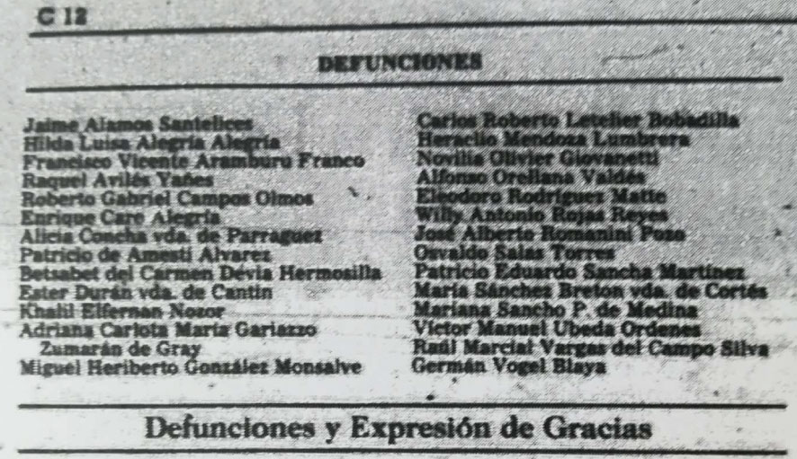
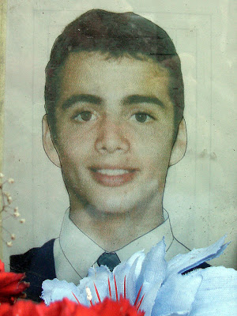
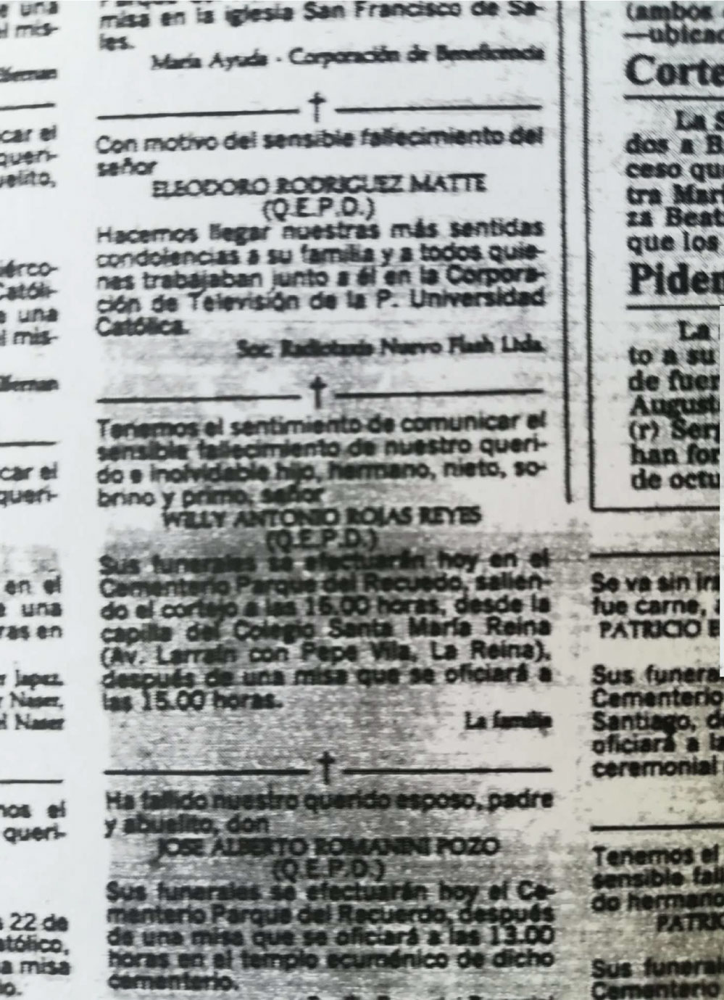
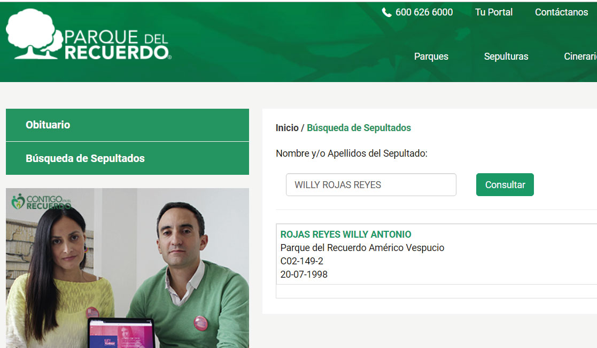
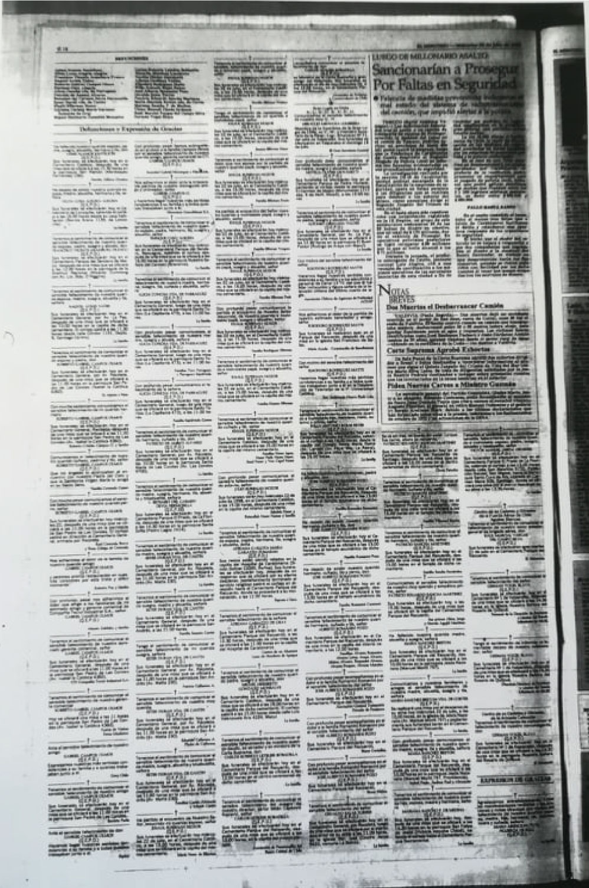

Willy Rojas
Subtítulo aquí
Willy Rojas fue un estudiante de Bioingenieria en la Universidad de Chile, proveniente de la comuna de la reina. A los 18 años, luego de sufrir una decepción amorosa, se dirigió a la salida Oriente del Túnel Tinoco en el Cajón del Maipo y se suicidó el 20 de Julio de 1998. Luego de dispararse en el pecho y no morir, se dio un segundo tiro en la sien, siendo este el que finalmente acabaría con su vida.
Luego de ser encontrado sus funerales se realizaron el 22 de Julio de 1998.




